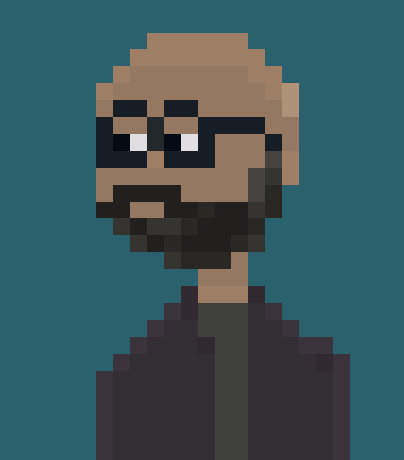

Preparando el entorno de desarrollo: Instalación limpia de Fedora 40
21 de septiembre, 2024
Antes de sumergirme en el desarrollo del juego, el primer paso es preparar el entorno de escritorio. He elegido Fedora. Esta elección se basa en varios factores:
- Es una distribución mainstream con amplio soporte de la comunidad, lo que facilita la resolución de problemas.
- Ofrece un buen equilibrio entre estabilidad e innovación.
- Tengo experiencia previa con Fedora y me siento cómodo con ella.
- Mi hardware es altamente compatible con esta distribución.
Para comenzar con una instalación limpia, he desarrollado dos scripts que facilitan el proceso de respaldo y reinstalación de mis aplicaciones. Aquí está el primer script, que al ejecutarlo genera una lista de las aplicaciones instaladas por mi en mi sistema actual:
#!/bin/bash
# Nombre del archivo donde se guardarán las aplicaciones
ARCHIVO_SALIDA="aplicaciones.txt"
# Función para obtener aplicaciones instaladas por el usuario via DNF
obtener_apps_dnf() {
echo "Aplicaciones instaladas por el usuario (DNF):" > "$ARCHIVO_SALIDA"
dnf repoquery --userinstalled --queryformat '%{NAME}' | sort | uniq >> "$ARCHIVO_SALIDA"
}
# Función para obtener aplicaciones instaladas por Flatpak
obtener_apps_flatpak() {
echo -e "\nAplicaciones instaladas por Flatpak:" >> "$ARCHIVO_SALIDA"
flatpak list --app --columns=application | sort >> "$ARCHIVO_SALIDA"
}
# Ejecuta las funciones para obtener la lista de aplicaciones
obtener_apps_dnf
obtener_apps_flatpak
echo "La lista de aplicaciones instaladas por el usuario ha sido guardada en $ARCHIVO_SALIDA"
Después de obtener la lista de aplicaciones, procedo a formatear y realizar una instalación limpia de Fedora. Una vez instalado y actualizado el sistema, copio el archivo generado por el primer script en mi directorio $HOME y ejecuto el segundo script para reinstalar todas las aplicacionesde la lista:
#!/bin/bash
# Nombre del archivo que contiene la lista de aplicaciones
ARCHIVO_ENTRADA="aplicaciones.txt"
# Función para instalar aplicaciones DNF
instalar_dnf() {
echo "Instalando aplicaciones DNF..."
APPS_DNF=$(sed -n '/DNF:/,/Flatpak:/p' "$ARCHIVO_ENTRADA" |
grep -v "DNF:" | grep -v "Flatpak:" | tr '\n' ' ')
if [ -n "$APPS_DNF" ]; then
sudo dnf install -y $APPS_DNF
else
echo "No se encontraron aplicaciones DNF para instalar."
fi
}
# Función para instalar aplicaciones Flatpak
instalar_flatpak() {
echo "Instalando aplicaciones Flatpak..."
APPS_FLATPAK=$(sed -n '/Flatpak:/,$ p' "$ARCHIVO_ENTRADA" |
grep -v "Flatpak:" | tr '\n' ' ')
if [ -n "$APPS_FLATPAK" ]; then
for app in $APPS_FLATPAK; do
flatpak install -y flathub $app
done
else
echo "No se encontraron aplicaciones Flatpak para instalar."
fi
}
# Verifica si el archivo de entrada existe
if [ ! -f "$ARCHIVO_ENTRADA" ]; then
echo "El archivo $ARCHIVO_ENTRADA no existe. Por favor, ejecuta primero el script de listado de aplicaciones."
exit 1
fi
# Ejecuta las funciones de instalación
instalar_dnf
instalar_flatpak
echo "La instalación de aplicaciones ha terminado."
Espero que esta información sea útil para aquellos que deseen realizar un proceso similar de reinstalación de aplicaciones para dejar tu sistema a punto para comenzar a utilizarlo de inmediato.
El inicio de una aventura: Creando una aventura gráfica 2D Point & Click
12 de septiembre, 2024
Hoy marco el inicio de una emocionante aventura personal: la creación de mi propio juego. Como alguien que no tiene experiencia previa en programación ni en arte digital, este proyecto representa un desafío enorme y, al mismo tiempo, la realización de un sueño largamente postergado.
Durante las últimas semanas, he estado trabajando en el corazón del proyecto: la historia. Las aventuras gráficas clásicas de LucasArts han sido siempre una inspiración, y ahora me propongo crear una narrativa interactiva al más puro estilo de las aventuras clásicas de los 90, la cual estará repleta de puzzles intrigantes y personajes memorables.
Las herramientas que me ayudarán en esta aventura
Como entusiasta de Linux desde hace muchos años (actualmente uso Fedora 40), era crucial encontrar herramientas multiplataforma que me permitieran diseñar y crear el juego en este sistema operativo. Después de mucho investigar, me decidí por las siguientes:
- El sistema operativo: Fedora 40.
- Trello: Para organizar y gestionar las tareas del proyecto. Siendo una herramienta basada en web, funciona perfectamente en cualquier plataforma.
- Aseprite: Mi elección para crear personajes y fondos en pixel art, capturando la esencia de las aventuras clásicas. Afortunadamente, tiene una versión para Linux.
- Godot: El motor de juego que utilizaré, elegido no solo por su accesibilidad y naturaleza de código abierto, sino también por su excelente soporte multiplataforma, incluyendo Linux.
La elección de estas herramientas multiplataforma no solo me permite trabajar cómodamente en mi entorno Linux, sino que también facilita la eventual distribución del juego en múltiples sistemas operativos.
Por ahora, mi enfoque principal está en el aprendizaje. Estoy inmerso en cursos y tutoriales sobre estas herramientas, mientras continúo desarrollando la historia y los puzzles que darán vida a esta aventura. Soy consciente de que el camino será largo y desafiante, pero estoy determinado a perseverar.
Este blog será una especie de diario de desarrollo, un espacio donde compartiré mis avances, desafíos y aprendizajes. No existe una fecha límite para completar este proyecto; mi objetivo es disfrutar del proceso y, con un poco de suerte, convertir este sueño en realidad.
Como paralelamente estoy en constante aprendizaje sobre el mundo Linux y sus distribuciones, voy a postear todo lo que considere relevante como auto recordatorio. Como pueden ver, la memoria es mi punto débil. En fin...
¿Quién sabe? Tal vez mi experiencia inspire a otros a desempolvar sus propios sueños.
¡Que comience la aventura!